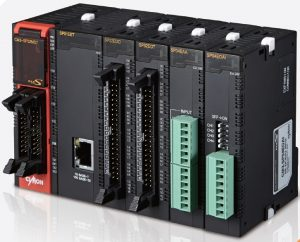
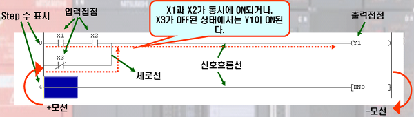
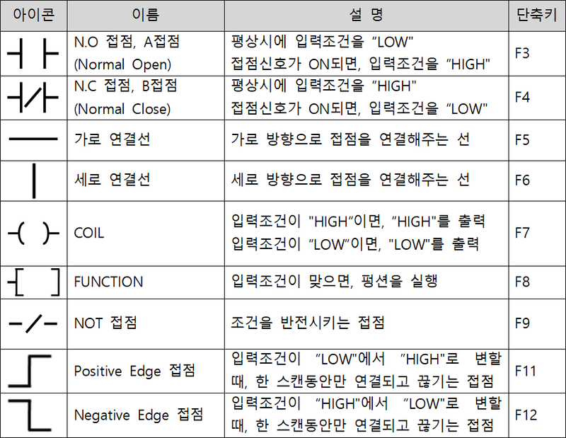

PLC란.
Programmable Logic Controller로 직역하자면 프로그램 가능한 논리 제어 장치이다.

스위치센서, 온도, 위치 정보 등을 입력으로 받아들인 뒤, 입력된 프로그램에 의해 순차적으로 논리를 처리하고
그에 따른 출력을 기반으로 공기 실린더, 유압실린더. 진동판과 같은 외부 장치를 제어한다.
PLC의 장점.
-
높은 신뢰성: PC를 사용한 제어의 경우, 프로그램 자체에서 리소스에 대한 부분을 신경써줘야 하며,
치명적인 버그 등이 발생하여, 중요한 부분이 오작동등으로 멈추는 경우가 발생할 수 있으나,
PLC의 경우에는 산업용 컨트롤러 답게, 이러한 오류가 발생할 조건이 최소화 되어 있어 몇년이
지나더라도 처음과 같은 동작이 가능하다. - 좋은 확장성: PLC는 각종 산업용 기기와 연결 호환성이 좋다.
-
간편한 사용: 그래픽언어인 래더를 사용해 보기 쉽고, 실시간 모니터링을 지원함으로써 매우 쉬운
디버깅이 가능하다.
PLC프로그래밍
plc에는 여러가지 프로그래밍 언어를 사용하고있다.
1. Ladder diagram(LD) : 릴레이 로직에 대응되는 언어 (우리가 사용하는 언어)
2. Sequential Function Charts(SFC) : 플로우 차트와 비슷한 방식
3. Structured Text(SF) : C와 비슷한 텍스트 방식의 프로그래밍 언어
4. Function Block Diagram(FBD) : 블록 다이어그램을 사용하는 방식
5. Instruction List(IL) : 어셈블리어와 비슷한 텍스트 방식의 프로그래밍 언어
Ladder diagram(LD)
래더 다이어그램은 그래픽 기반 프로그래밍 언어이다. 기호와 연결선은 필요한 논리를 프로그래밍하는 데 사용된다.
(미쓰비시)